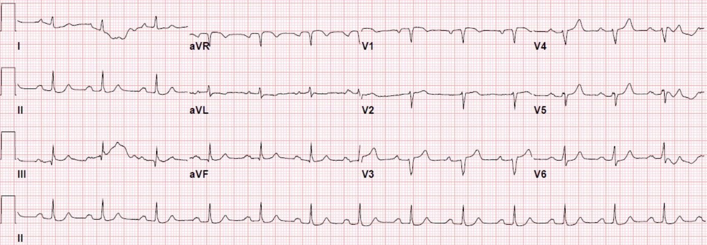
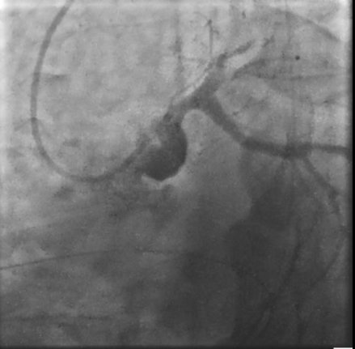
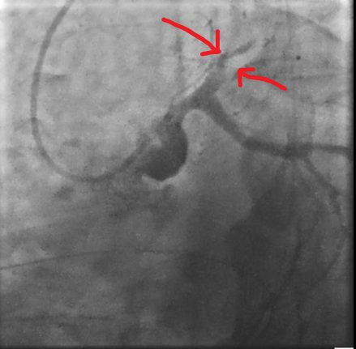
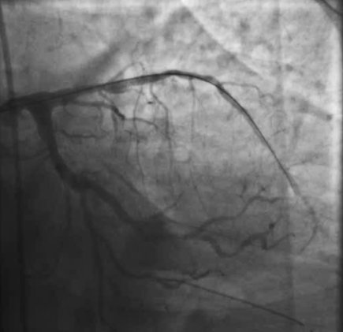
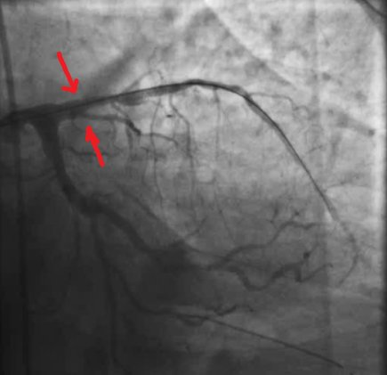
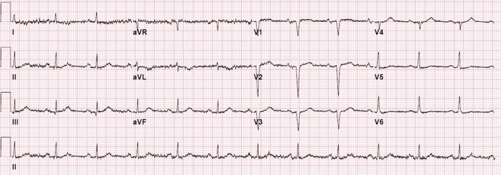
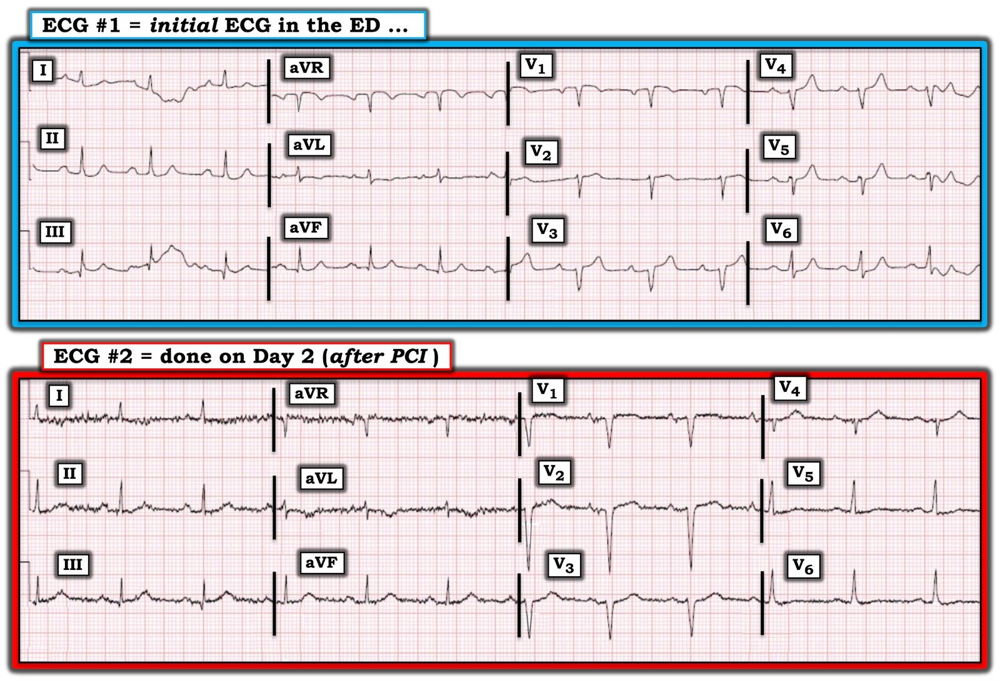

15/06/2020 — Nam giới 60 mấy tuổi ngừng tim với nhịp sốc được, sau đó tái lập tuần hoàn tự nhiên (ROSC), và không có STEMI – bạn sẽ làm gì?
Bản dịch tiếng Việt của bài "A man in his 60s with shockable arrest, then ROSC, and no STEMI – what will you do?" – Dr. Smith’s ECG Blog. Giữ nguyên toàn bộ 9 hình ảnh của bản gốc.
Ca bệnh do Allie Oberst và Ashley Mogul gửi, Pendell Meyers và Steve Smith biên tập
Một nam giới cuối tuổi 60 có tiền sử bệnh lý gồm đái tháo đường típ 2
kiểm soát kém, tăng huyết áp (HTN), rối loạn lipid máu (HLD) và “cơn đau tim thầm lặng” theo lời gia đình, được đưa đến khoa cấp cứu (ED) trong tình trạng đã tái lập tuần hoàn tự nhiên (ROSC)
sau ngừng tim có người chứng kiến, ban đầu được người xung quanh hồi sinh tim phổi. Theo
lời bạn bè, ông đang đi dạo trong công viên. Đội cấp cứu ngoài viện (EMS) báo rằng ban đầu bệnh nhân ở nhịp nhanh thất (VT) vô mạch, đã được khử rung
và 1 chu kỳ hồi sinh tim phổi cùng epinephrine, đạt ROSC. Bệnh nhân không đáp ứng khi đến viện.
Đây là điện tâm đồ lúc nhập viện:


Các dấu hiệu đáng chú ý gồm:
– ST chênh lên (STE) nhẹ ở các chuyển đạo trước (V1-V5, khoảng 0.5mm ở V1, 1.0 mm ở V3, và ít hơn ở các chuyển đạo khác)
– ST chênh xuống soi gương (reciprocal) ở V6, I và II
– Tăng tiến sóng R cực kỳ kém
– Sóng Q ở V3
– Sóng T hơi lớn, có thể là sóng T tối cấp ở V3-V5 (tự thân chúng không lớn, nhưng khá lớn so với các sóng R bị giảm biên độ do tăng tiến sóng R kém)
Tôi gửi điện tâm đồ này cho Dr. Smith mà không kèm thông tin nào khác (kể cả không có bệnh sử ngừng tim), và đây là những gì ông trả lời:
“rất nghi ngờ tắc LAD, có thể bán cấp hoặc chồng lên một nhồi máu cơ tim thành trước cũ.”
Gộp lại, các dấu hiệu này cực kỳ đáng lo ngại cho OMI của LAD, và phù hợp với một hình ảnh mà chúng tôi đã mô tả nhiều lần trên blog này:
A man in his 30s with chest pain (Nam giới ba mươi mấy tuổi bị đau ngực)
The computer and the cardiologist called this a “Normal EKG” (Máy tính và bác sĩ tim mạch gọi đây là “Điện tâm đồ bình thường”)
A man in his 50s with “gas pain” (Nam giới năm mươi mấy tuổi bị “đau do đầy hơi”)
A man in his sixties with chest pain, tachypnea, and hypertension (Nam giới sáu mươi mấy tuổi bị đau ngực, thở nhanh và tăng huyết áp)
A 40 year old man with chest pain since last night (Nam giới bốn mươi tuổi đau ngực từ tối qua)
A man in his sixties with chest pain at midnight with undetectable troponin (Nam giới sáu mươi mấy tuổi đau ngực lúc nửa đêm với troponin không phát hiện được)
How long would you like to wait for your Occlusion MI to show a STEMI? Sometimes serial ECGs minimizes the delay. (Bạn muốn chờ bao lâu để nhồi máu cơ tim do tắc của mình biểu hiện thành STEMI? Đôi khi các điện tâm đồ liên tiếp giúp giảm thiểu sự chậm trễ.)
What will you do for this patient transferred to you who is now asymptomatic? (Bạn sẽ làm gì cho bệnh nhân được chuyển đến, nay đã hết triệu chứng?)
Crushing Chest pain, but the ECG is not obvious; later there is both RBBB and LBBB (Đau ngực dữ dội như bị đè ép, nhưng điện tâm đồ không rõ ràng; về sau có cả RBBB lẫn LBBB)
35 yo woman with LAD occlusion manifesting with only hyperacute Ts and inferior ST depression, also missed by computer (Nữ ba mươi lăm tuổi tắc LAD chỉ biểu hiện bằng sóng T tối cấp và ST chênh xuống thành dưới, cũng bị máy tính bỏ sót)
Về mặt kỹ thuật, công thức phân biệt OMI thành trước với ST chênh lên biến thể bình thường sẽ không áp dụng được trong ca này do có ST chênh xuống (STD) ở II và V6, và cũng do có sóng Q ở V3; tuy vậy, đây là kết quả:
STE tại 60 msec sau điểm J ở V3 = 1.5 mm
Khoảng QTc = 367 ms
Biên độ sóng R ở V4 = 1.0 mm
Biên độ QRS ở V2 = 6.5 mm
Kết quả công thức = 19.43 (ủng hộ OMI LAD khi lớn hơn 18.2; điểm cắt chính xác nhất là 18.2 với độ nhạy và độ đặc hiệu khoảng 85%; điểm cắt 19.0 có độ đặc hiệu khoảng 97%, và 17.0 có độ nhạy khoảng 97%)
Người ta có thể nghĩ đây là nhồi máu cơ tim cũ (nhồi máu cơ tim cũ với ST chênh lên tồn lưu, còn gọi là phình thất trái), và bệnh nhân có sẹo cũ làm ổ khởi phát rối loạn nhịp thất. Nhưng điện tâm đồ lại nói khác!! Nhồi máu cơ tim cũ có sóng T nhỏ; nhồi máu cơ tim cấp có sóng T lớn. Trong hai nghiên cứu, một nghiên cứu xây dựng và một nghiên cứu thẩm định, Smith và cs. đã chỉ ra rằng nếu chẩn đoán phân biệt là giữa nhồi máu cơ tim cấp và cũ, thì nếu bất kỳ chuyển đạo nào trong V1-V4 có tỷ số T/QRS lớn hơn 0.36, đó là nhồi máu cấp. Nếu nhỏ hơn 0.36, đó là nhồi máu cũ hoặc bán cấp (triệu chứng trên 6 giờ). Trong ca này, V3 có tỷ số T/QRS lớn: 4.5/6.5 = 0.69, vì vậy đây chắc chắn là nhồi máu cấp (hoặc cấp chồng lên nhồi máu cơ tim cũ).
Lưu ý: “hình thái phình thất trái” trên điện tâm đồ thường đi kèm một túi phình giải phẫu trên siêu âm tim, còn gọi là “biến dạng tâm trương” (diastolic distortion). Ít nhất cũng có vô động.
Quay lại ca bệnh:
Với bệnh sử ngã gục và nhịp ban đầu là VT
theo báo cáo của EMS, có nghi ngờ cao OMI là nguyên nhân gây ngừng tim. Bệnh nhân được
điều trị bằng amiodarone tiêm nhanh (bolus) và truyền liên tục.
Troponin I độ nhạy cao ban đầu nằm trong giới hạn bình thường, 9 ng/L (giới hạn trên của bình thường ở
nam là 20 ng/L).
Khoa tim mạch đồng ý đưa bệnh nhân đi thông tim
khẩn.
Phát hiện tắc 100% ở LAD đoạn giữa và
đã đặt stent ở LAD đoạn gần và đoạn giữa, đạt dòng chảy TIMI 3. Cũng phát hiện tắc mạn tính vôi hóa 100% ở RCA đoạn xa
và đã đặt stent nhưng không đạt được tái lưu
bền vững. Ghi nhận dòng chảy ngược dòng qua tuần hoàn bàng hệ ở đoạn xa. Trong lúc thông tim ghi nhận EF 30-40% kèm có thể có giảm động thành trước bên
và thành dưới đáy.








Troponin I lặp lại sau thông tim tăng lên 440 ng/L và đạt đỉnh
777 ng/L.
Siêu âm tim sau can thiệp ghi nhận phì đại thất trái đồng tâm, LVEF
40-50%, vô động mỏm và rối loạn chức năng tâm trương.
Đã thu thập hồ sơ cũ từ khoảng 7 tháng trước, gồm một kết quả đọc điện tâm đồ cũ (không có hình ảnh) và kết quả nghiệm pháp gắng sức trước đây. Điện tâm đồ khi đó được đọc là có thể có nhồi máu thành dưới và trước vách, chưa xác định tuổi. Nghiệm pháp gắng sức ghi nhận “nhồi máu ở thành mỏm và thành trước với mức hồi phục tối thiểu, giảm động thành mỏm, và EF 42%.” Vào thời điểm đánh giá đó, bệnh nhân được đề nghị thông tim do đau ngực khi gắng sức từng lúc và khó thở, nhưng họ đã chọn điều trị ngoại trú không xâm lấn.
Điện tâm đồ ghi lại vào Ngày 2 nằm viện:


Những điểm cần học:
Không phải mọi OMI đều biểu hiện thành STEMI. Tắc hoàn toàn LAD có thể rất kín đáo. Chúng tôi đã mô tả hình ảnh kín đáo này nhiều lần, bao gồm ST chênh lên tối thiểu ở các chuyển đạo trước tim bên phải kèm ST chênh xuống soi gương ở các chuyển đạo bên và dưới. Đây chỉ là một trong nhiều hình ảnh có thể nhận ra nhờ kinh nghiệm.
Hãy xem thật nhiều ví dụ khác để khắc sâu hình ảnh này vào trí nhớ:
A man in his 30s with chest pain (Nam giới ba mươi mấy tuổi bị đau ngực)
The computer and the cardiologist called this a “Normal EKG” (Máy tính và bác sĩ tim mạch gọi đây là “Điện tâm đồ bình thường”)
A man in his 50s with “gas pain” (Nam giới năm mươi mấy tuổi bị “đau do đầy hơi”)
A man in his sixties with chest pain, tachypnea, and hypertension (Nam giới sáu mươi mấy tuổi bị đau ngực, thở nhanh và tăng huyết áp)
A 40 year old man with chest pain since last night (Nam giới bốn mươi tuổi đau ngực từ tối qua)
A man in his sixties with chest pain at midnight with undetectable troponin (Nam giới sáu mươi mấy tuổi đau ngực lúc nửa đêm với troponin không phát hiện được)
How long would you like to wait for your Occlusion MI to show a STEMI? Sometimes serial ECGs minimizes the delay. (Bạn muốn chờ bao lâu để nhồi máu cơ tim do tắc của mình biểu hiện thành STEMI? Đôi khi các điện tâm đồ liên tiếp giúp giảm thiểu sự chậm trễ.)
What will you do for this patient transferred to you who is now asymptomatic? (Bạn sẽ làm gì cho bệnh nhân được chuyển đến, nay đã hết triệu chứng?)
Crushing Chest pain, but the ECG is not obvious; later there is both RBBB and LBBB (Đau ngực dữ dội như bị đè ép, nhưng điện tâm đồ không rõ ràng; về sau có cả RBBB lẫn LBBB)
35 yo woman with LAD occlusion manifesting with only hyperacute Ts and inferior ST depression, also missed by computer (Nữ ba mươi lăm tuổi tắc LAD chỉ biểu hiện bằng sóng T tối cấp và ST chênh xuống thành dưới, cũng bị máy tính bỏ sót)
Trong thực tế, chúng ta điều trị từng bệnh nhân cụ thể và phải ước tính riêng cho từng người xác suất hội chứng vành cấp (ACS) là nguyên nhân gây ngừng tim. Ca này cho thấy vì sao không phù hợp khi kết luận từ thử nghiệm COACT rằng TẤT CẢ bệnh nhân sau ngừng tim không có tiêu chuẩn STEMI trên điện tâm đồ đều không cần chụp mạch vành cấp cứu. Mấu chốt của lợi ích tái tưới máu là chọn được bệnh nhân có OMI (những người có thể hưởng lợi từ tái tưới máu cấp cứu). Tiêu chuẩn STEMI đã được chứng minh là không chính xác trong phát hiện OMI, và do đó không thể nào đủ để, một mình nó, loại trừ nhu cầu thông tim cấp cứu. Trong ca này, hình ảnh điện tâm đồ đặc thù này cùng với nhịp ban đầu là VT đã dẫn tới nghi ngờ cao nhồi máu cơ tim cấp là nguyên nhân gây ngừng tim và giúp củng cố lý lẽ cho thông tim khẩn dù không có tiêu chuẩn STEMI.
Để biết thêm về thử nghiệm COACT, xem bài này, nơi chúng tôi đã bàn chi tiết về các điểm yếu của nó:
ROSC: does the ECG rule out OMI? And why does a heart just stop beating? And what rhythm is this? (ROSC: điện tâm đồ có loại trừ được OMI không? Và vì sao tim lại cứ thế ngừng đập? Và đây là nhịp gì?)
Nếu có ST chênh lên kèm sóng Q, đặc biệt là sóng QS, thì không thể là ST chênh lên biến thể bình thường. Hãy dùng quy tắc phình thất trái.
Nếu có ST chênh lên nhưng không có sóng Q, không có ST chênh xuống ở thành dưới hay trước tim, không có đoạn ST dạng lồi, không có biến dạng phần cuối QRS, không có ST chênh lên 5mm, không có sóng T đảo ngược, thì có thể là biến thể bình thường và có thể áp dụng công thức LAD. Hãy luyện tập với các ca sau:
12 Example Cases of Use of 3- and 4-variable formulas to differentiate normal STE from subtle LAD occlusion (mười hai ca ví dụ sử dụng công thức ba biến và bốn biến để phân biệt ST chênh lên bình thường với tắc LAD kín đáo)

===================================
BÌNH LUẬN CỦA TÔI, bởi KEN GRAUER, MD (12/6/2020):
===================================
Ca bệnh quan trọng do Drs. Oberst, Mogul và Meyers trình bày — về lợi ích của thông tim kịp thời sau ROSC, ngay cả khi không có ST chênh lên rõ rệt.
- Các dấu hiệu trên điện tâm đồ ban đầu không đáng tin cậy để phát hiện mọi bệnh nhân sau ngừng tim có thể hưởng lợi từ tái tưới máu sớm. Lý do là bằng chứng thiếu máu cục bộ cấp trên điện tâm đồ sẽ không phải lúc nào cũng thấy được ở nhóm bệnh nhân này (Staer-Jensen và cs. Circ: Cardiovasc Intervent — Tập 8; Số 10, 2015). Do đó — các thông số khác (tức là, như trong ca này — ngã gục đột ngột do VT) có thể hỗ trợ việc chọn ra những bệnh nhân có nhiều khả năng hưởng lợi nhất từ thông tim sớm.
- Tôi tập trung bình luận vào 2 điện tâm đồ trong ca này. Để rõ ràng và dễ so sánh — tôi đã đặt 2 bản ghi này cạnh nhau trong Hình 1.


SUY NGHĨ CỦA TÔI về điện tâm đồ #1: Drs. Oberst, Mogul và Meyers đã nêu bật các dấu hiệu then chốt từ điện tâm đồ ban đầu được ghi tại khoa cấp cứu, sau khi đội EMS hồi sức bệnh nhân này (điện tâm đồ #1 trong Hình 1). Tôi sẽ “phóng to” vào một vài chi tiết:
- Xem xét điện tâm đồ #1 một cách hệ thống: Có nhiễu kèm trôi đường nền ở chuyển đạo I và III — và ở phức bộ cuối cùng được ghi tại các chuyển đạo V4,V5,V6 — nhưng ngoài điều đó, bản ghi đạt yêu cầu về kỹ thuật.
- Nhịp là nhịp xoang ~80 lần/phút. Khoảng PR hơi kéo dài, 0.22 giây. Phức bộ QRS hẹp — và QTc bình thường. Trục mặt phẳng trán bình thường, +50 độ. Không có lớn buồng tim.
Về Thay đổi Q-R-S-T:
- Về sóng Q và tăng tiến sóng R — Có sóng Q hẹp ở chuyển đạo III và aVF. Có thể đã đặt hơi sai vị trí một số điện cực trước tim — vì phức bộ QS ở chuyển đạo V1 trở thành phức bộ rS ở chuyển đạo V2 — rồi lại “mất” sóng r ban đầu ở chuyển đạo V3. Một sóng r ban đầu nhỏ xuất hiện trở lại ở chuyển đạo V4. Chuyển đạo V5 trông hơi bất thường, ở chỗ sóng lệch dương (sóng r) rộng hơn nhiều so với thường thấy ở một sóng r biên độ nhỏ như vậy. Vùng chuyển tiếp (nơi sóng R cao hơn độ sâu của sóng S) cuối cùng mới xảy ra giữa chuyển đạo V5 và V6. Kết luận: Tôi nghi ngờ một hoặc nhiều chuyển đạo trước đã được đặt quá cao trên ngực (nhất là khi có sóng P âm sâu ở chuyển đạo V1) — nhưng dù thế nào, tăng tiến sóng R kém mà ta thấy ở điện tâm đồ #1 phù hợp với nhồi máu thành trước cũ (và tiền sử bệnh của bệnh nhân này đáng chú ý có một “cơn đau tim thầm lặng” trước đây).
- Về thay đổi ST-sóng T — Có một số thay đổi ST-T không đặc hiệu ở vài chuyển đạo chi (tức là, chuyển đạo I, II, aVL) — nhưng chúng trông không có vẻ cấp tính. Đáng lo ngại hơn nhiều (như Drs. Oberst, Mogul và Meyers đã nêu) — có ST chênh lên tại điểm J 0.5-1.0mm ở các chuyển đạo từ V1 đến V5, cùng mức ST chênh xuống tại điểm J tương tự ở chuyển đạo V6. Điểm MẤU CHỐT: Sóng T ở các chuyển đạo V3, V4, V5 và V6 đều cao, nhọn một cách không tương xứng, và đáy rộng hơn mức nên có, nhất là khi biên độ sóng R ở các chuyển đạo này khá khiêm tốn. Trong bối cảnh lâm sàng cấp tính của ca này — điều này phù hợp với định nghĩa của tôi về sóng T tối cấp. Thông tim sớm rõ ràng là có chỉ định dựa trên điện tâm đồ này.
SO SÁNH 2 bản ghi: Tôi thích đặt các điện tâm đồ liên tiếp cạnh nhau khi so sánh — vì việc này giúp thấy những khác biệt kín đáo dễ hơn rất nhiều (Hình 1).
- Có nhiều nhiễu đường nền hơn hẳn ở điện tâm đồ #2. Dù vậy — nhịp vẫn là nhịp xoang, và hình thái QRS ở các chuyển đạo chi gần như giống hệt. Tôi không nghĩ đã có thay đổi đáng kể nào về hình thái ST-T ở các chuyển đạo chi giữa điện tâm đồ #1 và điện tâm đồ #2.
Ngược lại — đã có một số thay đổi ở các chuyển đạo ngực trên bản ghi theo dõi được ghi vào ngày sau PCI (điện tâm đồ #2):
- Lưu ý có một số khác biệt về biên độ QRS ở điện tâm đồ #2 — trong đó vùng chuyển tiếp nay xảy ra sớm hơn một chút (giữa chuyển đạo V4 và V5) so với ở điện tâm đồ #1. Lưu ý rằng thay vì sóng P âm ở chuyển đạo V1 (mà ta đã thấy ở điện tâm đồ #1) — sóng P ở V1 nay chủ yếu dương. Mặc dù những chi tiết này không làm thay đổi nhận định của tôi về các thay đổi ST-T cấp tính ở điện tâm đồ #1 — tôi tin rằng chúng có ủng hộ nghi ngờ của tôi rằng đã có đặt sai vị trí điện cực ở điện tâm đồ ban đầu, và nay đã được sửa lại ở điện tâm đồ #2.
- Tăng tiến sóng R vẫn kém ở điện tâm đồ #2. Hơn thế nữa — có “mất sóng r” từ chuyển đạo V3 (vốn có một sóng lệch dương ban đầu nhỏ xíu nhưng có thật) sang chuyển đạo V4 (có vẻ là phức bộ QS không có sóng r nào, dù khó phân định do quá nhiều nhiễu đường nền).
- Điểm MẤU CHỐT: Các thay đổi sóng T tối cấp tôi đã mô tả ở trên tại các chuyển đạo V3, V4, V5 và V6 của điện tâm đồ #1 — phần lớn đã hồi phục ở điện tâm đồ #2. Sóng T ở chuyển đạo V4 của điện tâm đồ #2 vẫn cao không tương xứng với đáy quá rộng — nhưng ngay cả ở chuyển đạo này, biên độ sóng T cũng thấp hơn so với ở điện tâm đồ #1. Điều này xác nhận rằng sóng T ở 4 chuyển đạo ngực này của điện tâm đồ #1 quả thực là tối cấp.
- Cuối cùng — vẫn còn ~1mm ST chênh lên tồn lưu ở chuyển đạo V1,V2 của điện tâm đồ #2 — điều này, trong bối cảnh tăng tiến sóng R rất kém mà ta thấy ở bản ghi này, phù hợp với khả năng phình thất trái.
Thêm hai điểm cần học:
- Điểm #1: Hãy ghi nhớ trong đầu “bức tranh” của sóng T mà ta thấy ở các chuyển đạo V3, V4 và V5 của điện tâm đồ #1 (và theo nguyên tắc “chuyển đạo lân cận” — cả “bức tranh” mà ta cũng thấy ở sóng T của chuyển đạo V6). Trong bối cảnh một biến cố tim cấp (dù đó là đau ngực đáng lo mới khởi phát, hay cơn VT gây ngừng tim như đã xảy ra trong ca này) — “bức tranh” sóng T này chỉ ra sóng T tối cấp. Những sóng T này cho ta biết bệnh nhân cần được cân nhắc thông tim sớm.
- Điểm #2: Cách TỐT NHẤT để trở nên thực sự giỏi trong nhận ra các thay đổi ST-T tối cấp — là thường xuyên xem lại các bản ghi liên tiếp của bệnh nhân mình, rồi đối chiếu với những gì đã xảy ra. Trong ca này — việc các thay đổi sóng T ở điện tâm đồ #1 gần như hồi phục hoàn toàn sau PCI chứng minh rằng sóng T ở 4 chuyển đạo ngực đó của điện tâm đồ #1 quả thực là tối cấp.
Xin CẢM ƠN Drs. Oberst, Mogul và Meyers đã trình bày ca bệnh này.